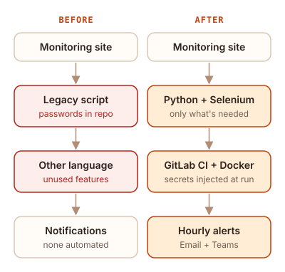

This was internal work, so it is described in general terms. No proprietary code or data is shown.
The problem
The team relied on a monitoring tool that tracked traffic on a marketplace API. When traffic got too high, a developer needed to step in before something broke. The tool worked, but it had two real problems.
- Exposed credentials. Passwords were hardcoded in the logic and committed to GitLab, and external contractors had access to that repo.
- Hard to maintain. It was written in a different language from the rest of the team's code, it was much more complex than it needed to be, and it carried features nobody used.
What I did
- Took the passwords out of the repo. The credentials now live in GitLab's CI/CD settings, and the pipeline injects them only while the automation runs. They're never committed, so contractors can't see them.
- Rewrote it in Python, the language the team already used, so anyone on the team could maintain it.
- Cut it down to what was needed. I dropped the unused features and kept the core job: watch the traffic with automatic updates.
- Automated the process with Selenium, which pulls numbers from the monitoring site on an hourly schedule.
- Packaged it in Docker and added hourly email and Microsoft Teams alerts.

Result
My team, my manager, and the director of our project started using it as soon as it shipped. My internship ended soon after, but I know it's still running today.
What I learned
Learn first, then own it. I came in knowing nothing about this system, so I spent the first stretch figuring out what it actually did and what the team actually needed. Once I understood it, I took ownership and drove the rebuild on my own. That habit of getting up to speed fast and then working independently is the biggest thing I took from Centene.